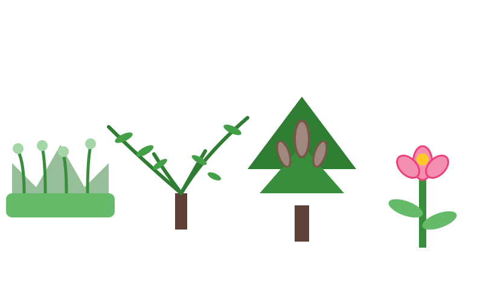
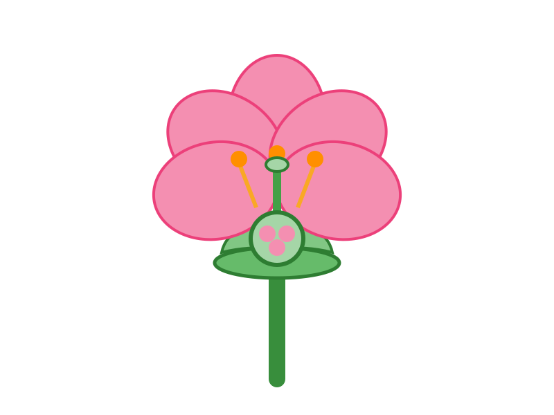

📖 O Reino dos Fotossintetizantes
As plantas são eucariontes, pluricelulares e autotróficos: produzem seu próprio alimento por fotossíntese. Suas células têm parede celular de celulose. A botânica divide as plantas em quatro grandes grupos, do mais simples ao mais evoluído: briófitas, pteridófitas, gimnospermas e angiospermas.

🌱 Plantas Sem Sementes e Com Sementes
A evolução das plantas pode ser contada por três grandes conquistas: vasos condutores (seiva), sementes e flores e frutos.
| Grupo | Vasos | Sementes | Flor/Fruto | Exemplos |
|---|---|---|---|---|
| Briófitas | ❌ | ❌ | ❌ | Musgos, hepáticas |
| Pteridófitas | ✅ | ❌ | ❌ | Samambaias, avencas |
| Gimnospermas | ✅ | ✅ (nuas) | ❌ | Pinheiros, araucárias |
| Angiospermas | ✅ | ✅ | ✅ | Flores, árvores frutíferas |
💡 Dica ENEM: Regra mnemônica: BPSFA — Briófitas, Pteridófitas, Gimnospermas, Angiospermas. Só angiospermas têm fruto (protege a semente e ajuda na dispersão).
🌻 A Flor e a Reprodução das Angiospermas
A flor é o órgão reprodutor das angiospermas. No estame (parte masculina), as anteras produzem pólen. No pistilo (parte feminina), o estigma recebe o pólen, que desce pelo estilete até o ovário, onde ocorre a fecundação dos óvulos.
- Polinização — transporte do pólen (vento, insetos, aves).
- Fecundação dupla — exclusiva das angiospermas: um gameta forma o embrião; outro forma o endosperma.
- Fruto — ovário desenvolvido que protege a semente.
- Dispersão — sementes viajam pelo vento, água ou animais.

💡 Dica ENEM: O fruto vem do ovário (ex.: tomate). A semente vem do óvulo (ex.: grão dentro do tomate). Não confunda os dois!